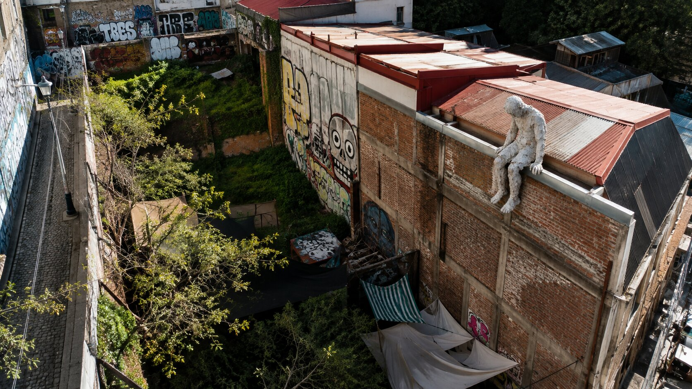
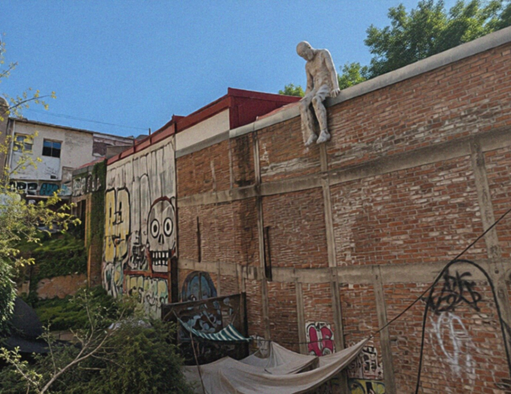
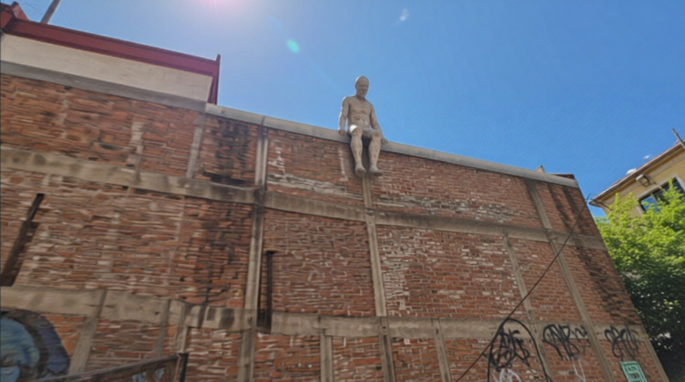
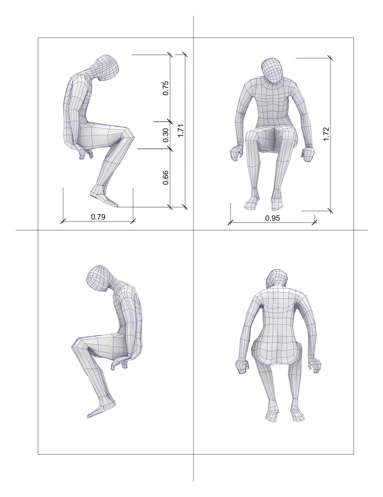
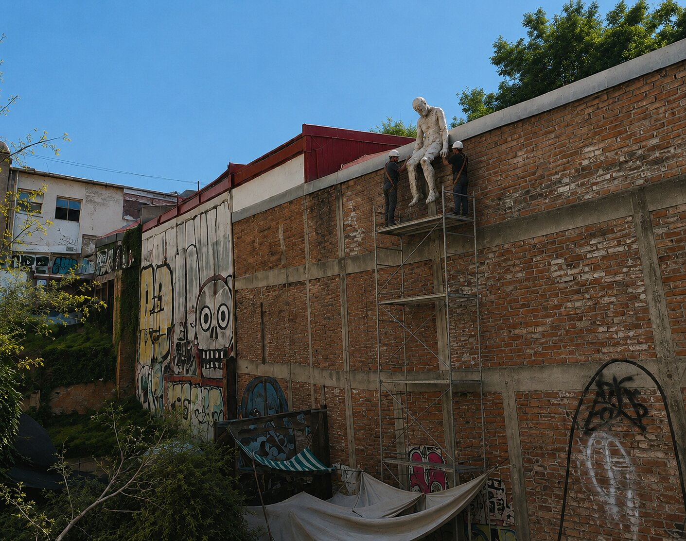
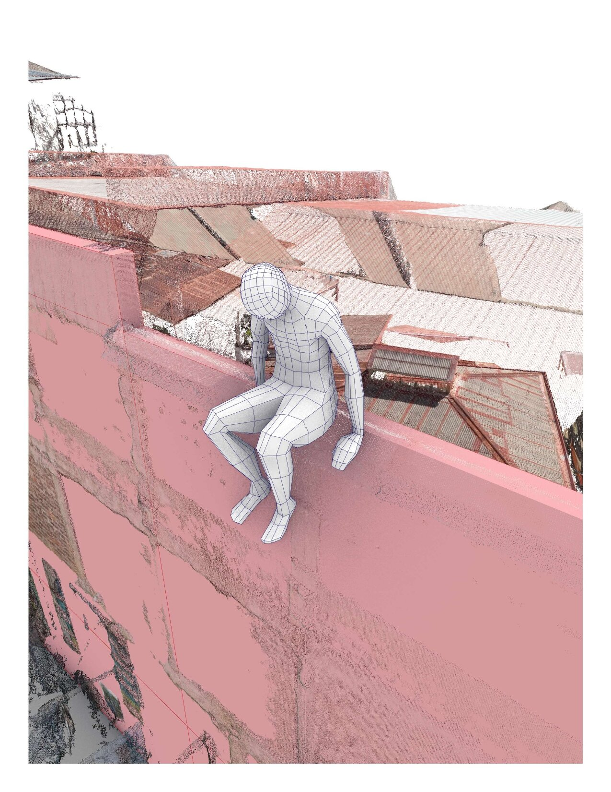
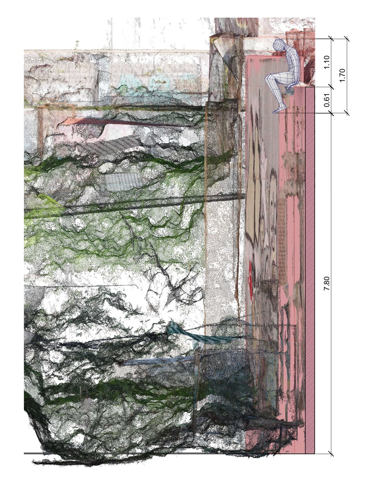

Proyecto Nº 001
El Nadador Nº 5
El Nadador Nº 5 continúa la serie de figuras posadas sobre ruinas y bordes de la ciudad. En este caso, el proyecto la sitúa en la techumbre de un sitio eriazo del pasaje Gálvez, en el Cerro Concepción de Valparaíso: una figura de papel maché sentada en el borde de una muralla de ladrillo, a 7,80 metros de altura, entre techos de zinc y teja.
Modelado sobre el levantamiento del sitio
El proyecto se desarrolló a partir de un levantamiento fotogramétrico del sitio: sobre esa nube de puntos se modeló y dimensionó la figura antes de definir su emplazamiento final en el borde de la techumbre.







UbicaciónVALPARAÍSO
33°02′S · 71°38′O